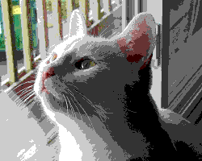
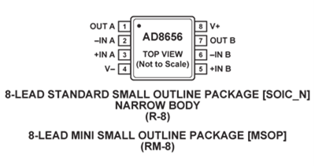

Это полная версия статьи, как её задумывал автор. Существует ещё сокращенная и отредактированная версия для общего круга читателей: часть 1, часть 2. Может кому-то будет удобней читать сокращенную версию.
Задумывались ли вы каким образом происходит воспроизведение звука в современных устройствах? Как формируется звуковой сигнал из комбинации единиц и нулей? Почему то или иное устройство воспроизводит звук лучше или хуже, и от чего зависит это субъективное качество звука? Наверняка задумывались, если вы читаете эту статью. Но как показывает практика большинство имеет довольно абстрактное представление о современном звуковом тракте, включая даже тех людей для кого цифровой звук — это часть профессии.
В этой статье хотелось бы рассказать о том, как работают устройства звуковоспроизведения, что такое цифро-аналоговый преобразовать(ЦАП), какие виды ЦАПов бывают и как можно собрать свой, на том или ином чипе. А также сломать некоторые стереотипы и предложить вариант воспроизведения вообще без цифро-аналогового преобразователя, в привычном его понимании. Эта идея далеко не нова, но до сих пор считается довольно радикальной, и у неё есть как сторонники, так и противники. Надеюсь, меня не сожгут на костре «православные» аудиофилы. Извините за бородатый каламбур.
Основная цель этого повествования - собрать воедино информацию необходимую для понимания устройства цифрового тракта звуковоспроизводящих устройств, рассмотреть техническую сторону воспроизведения PCM и DSD на практике. Пройти, так сказать, путь от голой теории к конечному устройству воспроизведения, заодно разрушив несколько мифов, как аудиофилов, так и скептиков. На этом моменте, пожалуй, стоит вставить ремарку, некоторые близко к сердцу принимают критику того, во что они свято верят.
Disclaimer
Я старался писать максимально объективно, все тезисы статьи подкреплены аргументами и ссылками, но от оценочных суждений всё же никуда не деться. Можете считать эту статью личным мнением автора, ни коим образом не претендующую на истину в последней инстанции!
Статья разделена на две основных части теоретическую и практическую.
Теория
Хотелось бы собрать всю важную информацию в одной статье, но сами понимаете, что это невозможно. Информации на столько много, что уместить, не то что в статье, а даже в одной книге было бы сложно. Поэтому к каждой главе и каждому тезису будут добавлены ссылки для тех, кто хочет изучить тему более подробно. Начнем с ИКМ.
PCM(ИКМ)
Про импульсно-кодовую модуляцию написано уже довольно много, сильно углубляться думаю не стоит. Всю информацию легко найти, достаточно вбить в поисковике аббревиатуру PCM или ИКМ. Быстро пробегусь по азам, с остановкой на некоторых интересных деталях.
Кратко для непосвящённых. В цифровом звуке, практически любой формат, за редким исключением, является записанным импульсно-кодовым потоком, или потоком PCM - pulse code modulation.
Flac, mp3, wav, Audio CD, DVD-Audio и другие форматы, это лишь способ упаковки, так сказать «консервации» потока PCM(ИКМ).
Экскурс в историю
Теоретические основы цифровой передачи звука были разработаны ещё на заре 20 века, учёные задумались, как можно передать звуковой сигнал на большое расстояние, не по телефону, а довольно странным, для того времени, способом. Разделить звуковую волну на небольшие части и отправлять получателю в некоем математическом представлении. Причём так, чтобы получатель, в свою очередь, мог восстановить исходную волну и прослушать запись. Основная идея заключалась в том, чтобы увеличить пропускную способность «эфира». В результате расчётов в 1933 году увидела свет теорема В. А. Котельникова. Да, да, именно Котельникова! А не как многие пишут на западный манер «Найквиста-Шеннона», т.к. была издана на 16 лет раньше Клода Шеннона. Да, Гарри Найквист был первым, кто затронул эту тему в 1927 году, он рассчитал минимальную частоту дискретизации для передачи формы волны, впоследствии названной в его честь «частотой Найквиста», но ни о какой теореме речи не шло.
Суть теоремы проста - непрерывный сигнал можно представить в виде интерполяционного ряда, состоящего из дискретных отчётов, по которым можно заново восстановить сигнал. Для возможности восстановления исходного(приблизительно) состояния сигнала, частота дискретизации должна равняться удвоенной(как минимум) верхней граничной частоте этого сигнала.
Много воды утекло с момента публикации, но теорема так и не была востребована. И только с приходом цифровой эпохи ей всё-таки нашлось применение, пригодилась теорема и при разработке формата CDDA(1980 г.) - Compact Disc Digital Audio, в простонародье называемым Audio CD или Red Book.
Характеристики его следующие:
Частота дискретизации – 44.1 кГц.
Разрядность квантования – 16 бит
*Частота дискретизации — частота взятия отсчётов сигнала при его дискретизации. Измеряется в герцах
*Разрядность квантования — количество двоичных разрядов, выражающих амплитуду сигнала. Измеряется в битах
Из теоремы Котельникова была рассчитана частота дискретизации 44.1 кГц. Расчёт был прост, слух среднестатистического человека не способен(вроде как) уловить звук за пределами, по разным данным: 19, 20, 22 кГц. Вероятно, частота 22кГц. и была выбрана в качестве верхней граничной.
Отсюда:
22000 * 2(удвоение верхней граничной по теореме) = 44000 + 100 = 44100 Герц
Всё вроде бы понятно, но погодите, откуда взялось 100 Герц? Одна из возможных причин, как пишут на форумах: Небольшой запас на случай ошибок или передискретизации. И даже в Википедии, в статье про частоту Найквиста, то же приведены эти цифры, но обоснование крайне невнятное. На самом деле, такая частота была выбрана из соображений совместимости со стандартом телевещания PAL, подробнее тут
Разрядность формата CDDA была выбрана 16 бит или 65536 отчётов, что равняется динамическому диапазону примерно в 96 дБ. Выбор такого большого числа отсчётов был сделан не случайно, во первых из-за сильного влияния шумов квантования, во вторых для обеспечения динамического диапазона выше(по крайней мере на бумаге) чем у главных тогда конкурентов: кассетных записей и виниловых пластинок. Подробнее об этом будет рассказано в разделе про цифро-аналоговые преобразователи.
Про дальнейшее развитие PCM(ИКМ) можно рассказать просто – умножение на два.
Появились другие частоты дискретизации: Сначала добавилась частота дискретизации 48 кГц. и в дальнейшем основанные на ней частоты 96, 192 и 384 кГц. Частота 44,1 кГц. также удваивалась до 88.2, 176,4 и 352,8 кГц. Разрядность же увеличилась с 16 до 24, а позднее и до 32 бит.
Следующим шагом после создания CDDA В1980 г. стал формат DAT- Digital Audio Tape, выпущенный в 1987 году. Частота дискретизации в нём составила 48 кГц., разрядность квантования не изменилась. Хотя формат провалился, частота дискретизации 48 кГц. прижилась на студиях звукозаписи, как пишут, из-за удобства цифровой обработки.
В 1999году был выпущен формат DVD-Audio, который позволял записать на один диск 6 стерео дорожек с частотой дискретизации 96 кГц. и разрядностью 24бит, или 2 стерео дорожки с частотой 192 кГц. 24бит. В том же году был представлен формат SACD - Super Audio CD, но выпущен он будет позднее, подробнее рассказано в разделе про DSD.
Это основные форматы, которые считаются стандартом для цифровых звукозаписей на носителях. На этом с исторической справкой, пожалуй, закончим и перейдем к конкретике. Рассмотрим, как передаются данные в цифровом звуковом тракте.
Структура цифрового звукового тракта
При проигрывании музыки происходит примерно следующее: Плеер при помощи так называемого «кодека», выполненного в виде устройства или программы, производит распаковку файла в том или ином формате(flac, mp3 и д.р.), или считывает данные с CD, DVD-Audio, SACD диска таким образом получая стандартный PCM(ИКМ) поток. Затем этот поток передаётся через: USB, LAN, S/PDIF, PCI и т.д. в устройство, которое обычно называют I2S конвертер. В свою очередь конвертер преобразует полученные данные в так называемые кадры интерфейса передачи данных “I2S”. Не путать “I2С”!
I2S
I2S - это последовательная шина передачи цифрового аудио потока, на данный момент является практически стандартом для подключения источника сигнала(компьютер, проигрыватель) к цифро-аналоговому преобразователю. Именно через неё подключается напрямую или опосредованно подавляющее большинство ЦАПов. Шина I2S может состоять из трёх, четырёх и даже пяти контактов. Существуют и другие стандарты передачи цифрового аудио потока, но т.к. используются они гораздо реже, в рамках данной статьи рассматриваться не будут. Выход(вход) I2S на печатных платах обычно выглядит примерно так:
- continuous serial clock(SCK ) – Тактовый сигнал битовой синхронизации(может называться BCK или BCLK)
- word select(WS) - Тактовый сигнал кадровой синхронизации(может называться LRCK или FSYNC)
- serial data(SD) - Сигнал передаваемых данных(может называться DATA, SDOUT или SDATA). Как правило, данные передаются от передатчика к приемнику, но бывают устройства, которые могут выступать и приемником и передатчиком одновременно. В таком случае может присутствовать ещё один контакт - SDIN- serial data in, по этому контакту данные движутся в направлении приёма, а не передачи.
SD или SDOUT служит для подключения цифро-аналогового преобразователя(ЦАПа), тогда как SDIN используется для подключения аналого-цифрового преобразователя(АЦП) к шине I2S.
Ещё может присутствовать контакт Master Clock(MCLK или MCK), это отдельная синхронизация между передающим и принимающим устройствами. Используется для синхронизации приёмника и передатчика от одного генератора тактовых импульсов. Такая синхронизация может снизить коэффициент ошибок передачи данных. Для внешней синхронизации MCLK служат два генератора тактовых импульсов с частотой 22579 кГц. и 24576 кГц. Первый - 22579 кГц. для частот кратных 44.1 кГц.(88.2, 176.4, 352.8 кГц.) , второй - 24576 кГц. для частот кратных 48 кГц.(96, 192, 384 кГц.). Так же могут встречаться генераторы на 45158.4 кГц. и 49152 кГц., в мире цифрового звука вообще всё любят умножать на два.
В I2S в основном используются три контакта SCK, WS, SD остальные контакты опциональны. Дополнительную информацию можете найти здесь.
Frame, или кадр I2S выглядит примерно следующим образом:
По каналу SCK передаются синхроимпульсы, под которые синхронизированы кадры. По каналу WS передаётся длинна «слова», при этом используется как состояние логической единицы, так и состояние логического ноля. Если на контакте WS логическая единица, значит, передаются данные правого канала, если ноль, то данные левого канала. По SD передаются биты данных - значения амплитуды звукового сигнала при квантовании, те самые 16,24 или 32 бита. Ни каких контрольных сумм и служебных каналов на шине I2S не предусмотрено. Если данные при передаче потеряются, возможности восстановить их не существует. Часто бывают, на каких-нибудь дорогих ЦАПах, внешние разъёмы для подключения к I2S. Использование таких разъёмов и кабелей может плохо отразиться на звуке, вплоть до появления «артефактов» и заиканий, всё будет зависеть от качества и длинны провода. I2S это всё же внутрисхемный разъём, длина проводников от передатчика до приёмника должна стремиться к нулю.
Рассмотрим, как передаётся PCM поток по шине I2S.При передаче PCM 44.1 кГц. с разрядностью16 бит, длинна слова на канале SD будет соответствовать этим 16ти битам, длинна кадра будет 32 бита(правый канал + левый). Но чаще всего передающие устройства используют длину слова 24 бита.
А при воспроизведении PCM 44.1х16 старшие биты либо попросту игнорируются т.к. заполнены нолями, либо в случае со старыми мультибитными ЦАП могут перейти на следующий кадр. Длина «слова»(WS) может также зависеть от плеера, через который воспроизводится музыка, а также от драйвера устройства воспроизведения.
Альтернативой PCM(ИКМ) и I2S является запись звукового сигнала в DSD, этот формат развивался параллельно ИКМ и теоремы Котельникова, хотя некоторое влияние она конечно оказала. Для улучшения качества звучания, по сравнению с CDDA, упор был сделан не на повышение разрядности квантования, как в формате DVD audio, а на увеличение частоты дискретизации.
DSD
DSD - Direct Stream Digital берет свое начало в лабораториях фирм Sony и Philips, впрочем, как и другие форматы рассматриваемые в этой статье.
SACD
Впервые DSD увидел свет на Super Audio CD дисках в далёком 2002 году.
На тот момент SACD был просто шедевр инженеров, в нём был применен совершенно иной способ записи и воспроизведения, очень близкий к аналоговым устройствам, реализация одновременно была проста и изящна. Носитель оснастили защитой от копирования, да и, владея новой технологией ни какие пираты были не страшны. Идея проста, компании Sony и Philips стали выпускать «закрытые» устройства исключительно для воспроизведения, без какой-либо возможности копирования дисков. Продавали студиям оборудование для записи, но при этом контроль за выпуском SACD дисков оставили себе.
Как знать, может формат CACD мог бы обрести популярность сравнимую с Audio CD, если бы не стоимость устройств воспроизведения. Безосновательно накручивая цены на проигрыватели, компании сами стали препятствовать популярности своего формата. А позже допустили ещё одну ошибку - для продвижения игровой приставки Sony PlayStation, компания Sony добавила возможность воспроизведения SACD на этой приставке. Спасибо хакерам! Приставку взломали и появилась возможность копировать диски SACD в ISO образы, которые в дальнейшем можно записать на обычную DVD болванку и воспроизводить на плеере от конкурентов, или извлечь дорожки для воспроизведения на компьютере.
Звукозаписывающие компании тоже хороши. Хотя формат и был высокого разрешения, но вопреки ожиданиям меломанов, на студиях записывали в DSD музыку не с мастер-ленты, а брали цифровую запись в PCM(ИКМ) пересводили, обрабатывали всем подряд: лимитерами, компрессорами, дитерингом с нойз-шейпингом, и различными цифровыми фильтрами. В итоге на выходе получался такой стерильный и сублимированный звук, что даже CD audio по сравнению с SACD мог звучать гораздо лучше. Этими действиями они угробили популярность SACD на корню, заодно подорвав доверие людей к любому новому формату. Кстати, привет аудиофилам! С виниловыми пластинками происходит то же самое, эта порочная практика применяется и по сей день. Студии печатают винил с цифровой записи, даже если у них есть запись на мастер-ленте, сейчас на виниле запросто может оказаться 44.1х16.
DSD
Что же представляет собой DSD? Это однобитный поток с очень высокой, по сравнению с PCM, частотой дискретизации, к тому же используется иной вид модуляции – PDM(плотностно-импульсная модуляция). Запись звука в таком формате производится однобитным АЦП(Аналого-цифровым преобразователем), сейчас такие АЦП на основе сигма-дельта модуляции используются повсеместно. Процесс записи происходит примерно так: Пока амплитуда волны возрастает, на выходе АЦП логическая единица, когда амплитуда падает, на выходе логический ноль, среднего значения быть не может. Сравнение происходит с предыдущим значением амплитуды волны.
DSD позволяет достичь важных преимуществ по сравнению с PCM:
1. Более точная прорисовка волны
2. Более высокая помехоустойчивость
3. Боле простой способ коммутации и передачи цифрового потока
4. Теоретически есть возможность уменьшить стоимость, упростив схему ЦАПа, но из-за «обратной совместимости» со старыми форматами, производители вряд ли пойдут на это.
Изначально на SACD дисках использовался формат «DSD x64» c частотой дискретизации 2822.4 кГц., за основу была взята частота дискретизации Audio CD 44.1кГц. увеличенная в 64 раза, оттуда и название x64. На данный момент реально используются DSD:
· x64 = 2822,4 кГц.
· x128 = 5644,8 кГц.
· x256 = 11289,6 кГц.
· x512 = 22579,2 кГц.
· заявлен DSD x1024 …
Ещё существует некий промежуточный формат между PCM и DSD, он носит название DXD - Digital eXtreme Definition. Этот формат, по сути, есть PCM(ИКМ), только высокого разрешения 352.8 кГц. или 384 кГц., с разрядностью квантования 24 или 32 бита. Применяется на студиях для обработки и последующего сведения. Но такой подход ущербен: во-первых, он нивелирует преимущества DSD, во-вторых, размер файлов получается больше чем у DSD. На текущий момент флагманские ЦАПы принимают на I2S входе PCM(ИКМ) поток с частотой дискретизации до 768 кГц. и разрядностью до 32 бит. Боюсь даже считать, какой объём на жестком диске будет занимать один альбом в таком разрешении.
Сейчас DSD практически отделился от SACD. Чаще формат DSD теперь можно встретить упакованным в файлы с расширением DSF и DFF. Выпущено множество проигрывателей с возможностью записи в DSF и DFF, любители хорошего звука, все чаще и чаще, оцифровывают виниловые пластинки именно в DSD формате. На звукозаписывающих студиях ситуация сложнее, ни кто не хочет вкладывать ресурсы в малопопулярный формат, и клепают ширпотреб - 44.1х16. Более подробную информацию о DSD можете прочесть на Википедии , перейдем к деталям.
Коммутация DSD и передача данных
Для передачи цифрового потока в DSD используется трёх контактная схема подключения:
1. DSD Clock Pin(DCLK) – синхронизация
2. DSD Lch Data Input Pin(DSDL) – данные левого канала
3. DSD Rch Data Input Pin(DSDR) – данные правого канала
В отличие от I2S, передача данных DSD предельно упрощена. DCLK - задаёт тактовую частоту битовой синхронизации, а по контактам DSDL и DSDR последовательно передаются сами данные левого и правого канала соответственно. Ни каких ухищрений тут нет, запись и воспроизведение в DSD происходит побитно. Такой подход даёт максимальное приближение к аналоговому сигналу, а за счёт высокой частоты уменьшаются шумы квантования и на порядок повышается точность воспроизведения.
DOP
Для теоретической части этот раздел необязателен, но для передачи DSD потока часто применяется именно DoP, поэтому упомянуть о нем стоит.
DoP - DSD over PCM. Открытый стандарт передачи данных DSD через кадры PCM. Стандарт создан для того, чтобы передавать поток через драйвера и устройства, не поддерживающие прямую передачу DSD(DSD native).
Принцип работы заключается в следующем:
В 24 битном кадре PCM старшие 8 бит заполняются единицами и это становится своеобразным маркером, обозначающим, что в данный момент передаются данные DSD, оставшиеся 16 бит заполняются последовательно битами данных DSD.
Для передачи DSD x64 с частотой однобитного потока 2822.4 кГц. необходима частота дискретизации PCM равная 176.4 кГц.(176.4*16 = 2822.4 кГц.). Для передачи DSD x128 с частотой 5644.8 кГц. уже потребуется частота дискретизации PCM 352.8 кГц. Подробнее можете прочесть тут
Цифро-аналоговые преобразователи
А теперь перейдем к ЦАП - цифро-аналоговым преобразователям. Это очень важный и сложный раздел который покрыт завесой тайны и аудиофильской мистикой. Изложенную здесь информацию пришлось собирать довольно долго, буквально по крупицам. К тому же вокруг цифро-аналоговых преобразователей очень много спекуляций из противоборствующих лагерей: маркетологов, аудиофилов и скептиков.
Мультибитные ЦАП
Вначале, когда только появился формат Audio CD, PCM(ИКМ) в аналоговый сигнал преобразовывали при помощи мультибитных ЦАП, построены они были на основе резистивной матрицы постоянного импеданса, так называемая R-2R матрица.
Упрощенная схема мультибитного ЦАП выглядит так:
Принцип работы мультибитных ЦАПов заключается в следующем:
PCM поток разделяется на два канала, левый и правый, и переводится из последовательного представления сигнала в параллельное, например при помощи сдвиговых регистров. Необходимо записывать в буфер одного регистра данные правого канала, а в буфер другого левого. И передавать одновременно по параллельным портам с заданной частотой дискретизации(чаще всего 44.1кГц.), как на изображении ниже, только параллельных выходов будет не 8, а 16, потому что разрядность 16 бит. В зависимости от положения в кадре старшие и младшие биты будут иметь на пути следования электрического тока разное сопротивление, т.к. количество последовательно подключенных резисторов будет разное. Так и должно быть, чем старше бит, тем больше должна быть его значимость.
Мультибитные ЦАП, или попросту мультибиты, требуют очень качественных компонентов и очень точной подгонки резисторов, т.к. любые неточности в номиналах компонентов суммируются, и могут привести к серьёзным отклонениям от исходной волны, создавая погрешность в несколько разрядов квантования.
В мультибитных ЦАП 80 годов нет ни каких манипуляций с PCM(ИКМ). Подключаются мультибиты напрямую к шине I2S и проигрывают ИКМ как есть: пришли данные правого канала(16 бит) – подождал данные второго канала(16 бит) – выдал оба канала на резистивную матрицу, и так с частотой 44.1 кГц. Частота и разрядность, на тот момент, определялись форматом СDDA, который стал практически эталонной реализацией теоремы Котельникова, так же как и формат MP3 позднее(с некоторыми оговорками). Только начиная с формата DVD audio был пересмотрен подход к оцифровке и воспроизведению звука.
Так работали простейшие ЦАПы, позднее стали использовать преобразователи с более сложным устройством. Кроме модернизации схем и улучшения качества компонентов в мультибитных ЦАПах стали применять технологию Oversampling. Oversampling – это передискретизация цифрового потока с повышением частоты дискретизации и разрядности квантования для уменьшения шума квантования.
Для того что бы объяснить, что стало причиной использования технологии Oversampling, необходимо рассказать о применении теоремы Котельникова на практике. Всё далеко не так радужно, как происходит в мире математики, и ни о каких «с любой точностью», как написано в теореме, и речи не идёт.
Теорема Котельникова
Подробно описывать теорему не вижу смысла, если кому то интересно всегда можно обратиться к первоисточникам В. А. Котельников «О ПРОПУСКНОЙ СПОСОБНОСТИ «ЭФИРА» И ПРОВОЛОКИ В ЭЛЕКТРОСВЯЗИ»
Владимир Александрович Котельников был великим человеком, он внёс неоценимый вклад в науку. Ни в коей мере не хочу принижать его заслуг! Но всё же придётся выступить в роли критика, и даже не самой теоремы, а её применения в практической плоскости.
Часто теорему Котельникова воспринимают очень буквально и возводят в а6солют, конечно это не правильно! О сколько я прочитал статей «твердолобых» скептиков про «чудесные» форматы MP3, CDDA и про «злых» аудиофилов, которые спят и видят, как бы разорить честных граждан «впаривая» свои DVD-Audio и DSD. Конечно же главным аргументом у них выступает теорема Котельникова.
Начнём с того, что так называемой частоты Найквиста(дискретизации) на практике недостаточно для передачи точной формы волны, т.к. из-за не идеальности условий появляются шумы и искажения. Шумы квантования при записи звукового сигнала, шумы округления при его обработке и воспроизведении. Принято считать, что шумы квантования не могут быть меньше половины младшего разряда квантования, это обусловлено тем, что в процессе квантованя звукового сигнала происходит округление до ближайшего разряда, в большую или меньшую сторону. Шумы округления, также не могут быть меньше половины младшего разряда или, как его ещё называют, шага квантования. Есть ещё собственные шумы АЦП и ЦАП, но для них сложно привести точную цифру т.к. очень много факторов оказывают влияние: конкретная реализация, количество и качество компонентов и даже окружающая среда. Обычно собственные шумы составляют несколько разрядов квантования. Из этого следует, что частота дискретизации должна быть значительно выше частоты Найквиста(Котельникова), что бы компенсировать потери при оцифровке и последующем воспроизведении цифровой записи.
Приведу пример из конспекта лекций:
За А – взята амплитуда сигнала.
«Как видно, пока пиковое значение входного сигнала не превышает 0,5 кванта, выходной сигнал квантователя равен нулю, т.е. имеет место центральная отсечка. Это приводит к нелинейности преобразования и возникновению больших искажений при малых амплитудах ЗС. Пока значение A > 1,5 выходной сигнал демодулятора представляет собой последовательность прямоугольных импульсов, у которых с изменением уровня ЗС меняется длительность (рис.3.7). Это обусловлено ошибками квантования, которые соизмеримы с амплитудой входного сигнала. Искажения начинают заметно уменьшаться только при A > 2 .»
Вологдин Э.И. «Стандарты и системы цифровой звукозаписи»
В приведённой цитате речь идет только о шуме квантования, причём взято минимально возможное значение(1/2 шага квантования). Шумы округления оказывают примерно такое же влияние(минимум 1/2 шага квантования).
Кроме шумов, в цифровой записи могут появляться искажения вызванные использованием ФНЧ – фильтра низких частот. По теореме Котельникова, необходимо ограничить частоту звукового сигнала фильтром и принять её за верхнюю граничную, из которой потом, нехитрым образом(умножением на 2), вычисляют частоту дискретизации(Найквиста). Проблема в том, что в теореме рассматривается идеальный ФНЧ, коих в реальном мире не бывает. Приведу цитату из того же конспекта лекций:
«Для надежного подавления спектральных составляющих выше частоты Найквиста антиэлайзинговый ФНЧ должен иметь частоту среза несколько ниже частоты Найквиста и очень сильно (не меньше 90 дБ) подавлять оставляющие спектра сигнала на этой частоте. Обычно это эллиптические фильтры 7…9 порядков. Высокая крутизна среза ФНЧ приводит к специфическим искажениям в виде «звона». Это связано с тем, что отклик на импульсное воздействие такого фильтра описывается осциллирующей функцией вида sinс(v ). Чем выше крутизна среза ФНЧ, тем медленнее происходит затухание звуковых колебаний. Единственным способом борьбы с этими искажениями является повышение частоты выборок, Это позволяет уменьшить крутизну спада антиэлайзингового ФНЧ без уменьшения эффективности подавления спектральных составляющих выше частоты Найквиста.»
Вологдин Э.И. «Стандарты и системы цифровой звукозаписи»
Далее нужно рассмотреть ещё один интересный момент, в теореме Котельникова приводится бесконечный по времени сигнал, что противоречит условиям записи на носитель или в файл:
«Теорема Котельникова дает предельные соотношения для идеализированных условий, среди которых следует отметить ограниченность спектра по частоте и бесконечное время наблюдения. Все реальные сигналы конечны во времени и имеют неограниченный по частоте спектр. Использование модели с ограниченным спектром и конечное время наблюдения приводят к погрешности при восстановлении непрерывного сигнала.»
«Расчеты показывают, что на практике частота FД существенно превышает частоту дискретизации по Котельникову.» Где FД - это частота дискретизации.
Ну и чтобы иметь представление о масштабе проблемы, приведу ещё одну цитату:
«Искажения, вызванные ошибками квантования, уверенно заметны на слух уже при 8-разрядном кодировании, хотя при этом величина искажений не превышает 0,5%. Это значит, что при 16-ти разрядном кодировании, используемом при записи CD, реальный динамический диапазон цифрового звука не превышает 48 дБ, а не 96 дБ, как это пишется в рекламе».
Вологдин Э.И. «ЦИФРОВАЯ ЗВУКОЗАПИСЬ»
Выводы
Теорема Котельникова, хотя математически верна, но для практического её применения требуется существенная коррекция. И частоту Найквиста(дискретизации) скорей можно обозначить как минимально допустимую, для восстановления приблизительной формы волны, но никак не для восстановления сигнала «с любой точностью». Для компенсации потерь при оцифровке и воспроизведении, частота дискретизации должна быть не в два, а как минимум в несколько раз выше верхней граничной частоты.
На этом теорему Котельникова оставим в покое и перейдём к изучению влияния различных шумов, при записи, сведении и воспроизведении звукового сигнала.
Шумы
Существует множество видов шумов влияющих на запись, приведу основные: шум квантования, шум округления, дрожание апертуры, нелинейные искажения, аналоговый шум. По ссылке приведено описание и формулы для расчёта по ним можно примерно понять, сколько искажений внесёт отдельный вид шумов в оцифрованный сигнал.
Кстати, не стоит воспринимать термин «шум» как проявление именно, знакомого всем, «белого шума», разные виды шумов воспринимаются по-разному, в данном контексте термин «шум» скорее нужно понимать как потерю части полезного сигнала.
Примерно рассчитать отдельный вид шума ещё можно, но общий уровень шумов при оцифровке вряд ли, получится очень сложная математическая модель с множеством допущений. Попробуем пойти от обратного, и проанализировать динамический диапазон записанного сигнала на АЦП(аналго-цифровом преобразователе) и сравнить его с теоретически возможным.
Уровень шума обычно рассчитывают по отношению к шагу квантования(1 разряд) или к динамическому диапазону звукового сигнала. Динамический диапазон измеряется в децибелах а рассчитать его можно по формуле: DR=20lg(2N) , где N – разрядность квантования. Получается для 16 бит возможный ДД(Динамический диапазон) около 96 дБ., а для 24 бит около 144дБ.
Далее возьму результаты тестирования АЦП «Lynx Studio Hilo TB» отсюда , как указано - это «студийный АЦП ЦАП высшей ценовой категории». В ходе тестирования АЦП, он показал следующие результаты:
|
Режим работы |
24-bit, 44 kHz |
|
|
Динамические диапазон, дБ (А) |
119.3 |
Отлично |
Без усиления
|
Режим работы |
24-bit, 44 kHz |
|
|
Динамические диапазон, дБ (А) |
112.6 |
Отлично |
Забегая вперёд скажу, что в тестируемом АЦП используются технологии Дитеринг(Dithering), Нойз-шейпинг(Noise shaping), а также Децимация, что позволяет расширить динамический диапазон и снизить уровень шума, про эти технологии подробнее будет рассказано в следующей главе.
А теперь прикинем: 24 бит равняется 144 дБ. – это возможный динамический диапазон. От 144 дБ. отнимем реальный динамический диапазон 119 дБ., потери от шумов составляют 25 дБ. и это в лучшем случае, а в худшем 32 дБ. К сожалению, при 16 бит его не тестировали, но в соотношении результаты должны быть ещё хуже, т.к. понижение разрядности неминуемо приводит к росту шумов. Получается примерно 1/5 часть сигнала просто теряется из-за шума.
Вот такая складывается, далеко не радужная картина, а если копнуть ещё глубже и учесть, как происходит процесс сведения на студии звукозаписи, становится не по себе. Как правило, сводят готовое произведение из семплов, в которых уже и так присутствуют указанные шумы, т.к. семплы записаны на подобном АЦП. Добавляют различные эффекты, которые как минимум приводят к передискретизации(resampling) и связанных с ней ошибкам округления. А ещё плохие звукорежиссёры очень любят всё пожать и выровнять, для этого используются лимитеры и компрессоры, принцип работы которых основан на уменьшении динамического диапазона. И через такое проходит практически каждый семпл. Даже используя простой эквалайзер, сигнал проходит через цифровой фильтр, который вносит шум округления минимум в 0.5 шага квантования. Далее при конечном сведении все семплы собираются в один поток, соответственно шумы каждого добавляются к шумам ещё одной передискретизации. Но и это не всё, при воспроизведении ещё и ЦАП добавляет собственные шумы и шум округления. Теперь представляете, что на самом деле остаётся от полезного сигнала!
Для исправления такого положения вещей стали применяться различные технологии борьбы с шумами, основными из них стали Oversampling, Dithering и Noise shaping.
Методы борьбы с шумами
Oversampling
Для компенсации потерь вызванные шумами, ещё во времена мультибитных ЦАПов, стали применять технологию Oversampling. Принцип работы Oversampling заключается в следующем - к уже существующим дискретным отчётам добавляются промежуточные, которые повторяют приблизительную форму волны. Промежуточные отсчёты либо рассчитываются с применением математической интерполяции, либо заполняются нулевыми значениями, и передаются на цифровой фильтр, который в свою очередь перезаписывает нули в соответствии со своим алгоритмом. Обычно и тот, и другой подход называют интерполяцией, а цифровой фильтр называют интерполирующим. Самым простым способом интерполяции является линейная интерполяция. А самым простым цифровым фильтром, может выступать фильтр нижних частот.
Иллюстрация алгоритма интерполяции дискретного сигнала (с коэффициентом 2). Красные точки обозначают исходные отсчеты сигнала, сплошные линии — непрерывный сигнал, представлением которого эти отсчеты являются. Сверху — исходный сигнал. В середине — этот же сигнал со вставленными нулевыми отсчётами (зеленые точки). Снизу — интерполированный сигнал (синие точки — интерполированные значения отсчётов).
Сначала стали применять только передискретизацию с повышением частоты например с 44,1 до 176,4 кГц., позднее применяли уже передискретизацию с повышением частоты дискретизации и увеличением разрядности квантования - этот процесс называется реквантование.
Хотя Oversampling вносит шум округления, но при его использовании, за счёт расширения динамического диапазона сигнала снижается общая плотность шума, и последующая обработка сигнала окажет уже меньшее влияние. Каждое удвоение частоты дискретизации расширяет динамический диапазон примерно на 1 шаг квантования(6 дБ.), минус шум округления.
Как раз для возможности применить Oversampling стали выпускать микросхемы мультибитных ЦАПов поддерживающие на входе цифровой поток до 192х24, а также появились аппаратные апсемплеры, на основе DSP - digital signal processor.
Применение технологии Oversampling конечно давало улучшение характеристик звукового сигнала, но кардинально ситуацию не меняло, уровень шума всё равно оставался довольно высок, поэтому стали применяться и другие технологии.
Децимация
Для записи и сведения звукового сигнала начали использовать децимацию - это обратный процесс, передискретизация с понижением частоты дискретизации и разрядности квантования. Записывался сигнал с высокой частотой дискретизации и разрядностью квантования, например 176.4 или 192 кГц. с разрядностью 24 бит, и при помощи удаления части отсчётов цифровым фильтром, «сжимался» до стандарта CDDA - 44.1 кГц. 16 бит. Этот подход позволяет немного снизить уровень шума квантования.
Иллюстрация алгоритма децимации дискретного сигнала (с коэффициентом 2). Красные точки обозначают отсчеты, сплошные линии — непрерывный сигнал, представлением которого эти отсчеты являются. Сверху — исходный сигнал. В середине — этот же сигнал после фильтрации в цифровом фильтре нижних частот. Снизу — децимированный сигнал.
Позднее для более серьёзной борьбы с шумами стали применять Дитеринг(Dithering) и Нойз-шейпинг(Noise shaping)
Dithering
Dithering – метод подмешивания псевдослучайного шума при оцифровке или воспроизведении звукового сигнала. Эта технология выполняет две задачи:
- Линеаризация передаточной функции квантователя\реквантователя.
- Декорреляция ошибок квантования.
Шумы квантования имеют корреляцию(взаимосвязь) с основным сигналом, что создаёт паразитные гармоники, которые повторяют форму сигнала, оказывая влияние на восприятие, создавая ощущение как бы «нечёткости» звучания. Добавляя специально смоделированный шум в основной сигнал можно убрать корреляцию, тем самым превратив коррелированный шум квантования в обычный белый шум. Это немного поднимает общий шумовой уровень, но положительно сказывается на восприятии. Визуально этот процесс проиллюстрирован в Википедии:
 До  После
После
Noise shaping
Технология Noise shaping позволяет значительно уменьшить шум, вносимый при: квантовании, реквантовании и дитеринге.
Суть этой технологии заключается в следующем: квантованный сигнал на входе сравнивается с сигналом на выходе реквантователя формируя разницу(ошибку), которая вычитается из основного сигнала, компенсируя тем самым искажения, внесённые реквантователем и в процессе дитеринга. Образуется так называемая обратная связь, которая стремится компенсировать разницу(ошибку) на входе и выходе реквантователя, подобно отрицательной обратной связи на операционном усилителе, только все преобразования происходят в цифровом виде.

Приведена схема реквантователя первого порядка, но, как правило, используются реквантователи вплоть до 9…12 порядка.
У этой технологии есть и минусы, применение Noise shaping вносит большое количество шумов в область высоких частот, поэтому применение ФНЧ(фильтра низких частот), с частотой среза близкой к верхней граничной частоте, становится обязательным условием.
Технология Noise shaping может использоваться и без Dithering, но результат совместного применения, на слух, будет заметно лучше.
«В практическом приложении технология NS всегда осуществляется одновременно
с технологией Dithering, поэтому все преимущества последней, описанные выше,
естественно сохраняются. Новым является добавление фильтра верхних частот. Это
позволяет понизить спектральную плотность мощности шума реквантования в
диапазоне от 0 до 14…16 кГц, за счет резкого увеличения мощности шума
реквантования на более высоких частотах, до частоты Найквиста.»
Вологдин Э.И. «АНАЛОГО-ЦИФРОВОЕ ПРЕОБРАЗОВАНИЕ АУДИО СИГНАЛОВ»
Последнюю технологию которую хотелось бы рассмотреть это DEM.
Dynamic Element Matching
Dynamic Element Matching или сокращенно DEM - это технология, которая формирует на выходе ЦАП несколько уровней сигнала. Она похожа на нечто среднее между однобитным и мультибитным ЦАПом, служит она для снижения детерминированных ошибок при использовании сигма-дельта модуляции(SDM). Эти ошибки, подобно шумам квантования, сильно коррелированны с сигналом на выходе однобитного модулятора, поэтому значительно влияют на восприятие звукового сигнала.
А также, эта технология снижает требования к аналоговому фильтру, т.к. форма сигнала ещё до фильтрации приближается к форме воспроизводимой волны. Технология DEM реализуется при помощи нескольких выводов, соединенных в общую шину, которые формируют выходной сигнал ЦАП.
В этой главе рассмотрены только основные виды технологий, применяемых при воспроизведении, кроме этого конечно могут применяться и другие, а также различные их сочетания и вариации. Особенно производители любят экспериментировать с цифровой фильтрацией и модуляторами, изобретая всё новые и новые цифровые фильтры, которые могут оказывать значительное влияние на сигнал, как в лучшую, так и в худшую сторону. Алгоритмы обработки цифрового сигнала современных ЦАП, как правило, довольно сложны и включают всё вышеперечисленное, а так же собственные наработки производителей. Разумеется, производители не публикуют алгоритмы фильтров и модуляторов, хорошо, если будет указана примерная блок схема, поэтому остаётся только предполагать, что на самом деле происходит со звуковым сигналом внутри того или иного цифро-аналогового преобразователя.
Сигма-дельта преобразователи
Вот мы и приблизились к апогею теоретической части, почти всё, о чём рассказывалось ранее, сходится в этой точке.
Сигма-дельта цифро-аналоговые преобразователи развивались параллельно мультибитным ЦАП, по совершенно иному пути. За основу была взята, как понятно из названия, сигма-дельта модуляция, в литературе обычно обозначается аббревиатурой SDM. В сигма-дельта модуляции передаётся не абсолютное значение амплитуды сигнала за единицу времени, как в мультибитных ЦАП, а изменения сигнала относительно предыдущего значения, если амплитуда возрастает, передаётся 1, если падает 0. Подобный принцип уже был описан в разделе про DSD.
Первые сигма-дельта ЦАПы были полностью однобитными, но за счёт высокой частоты дискретизации обеспечивали динамический диапазон на уровне примерно 129 дБ. За основу была взята частота дискретизации 44.1 кГц. вероятно для упрощения вычислений при интерполяции, тем самым экономя аппаратные ресурсы. Сначала использовали частоту 2.8 МГц., это 44,1 кГц. увеличенная в 64 раза. Сейчас же частота может быть различна и определяется внутренней архитектурой самого ЦАП, обычно основана она на частотных сетках кратных 44.1 кГц. и 48 кГц. с множителем 64, 128, 256, 512, 1024 . Со временем дельта-сигма ЦАП практически полностью вытеснили мультибитные, по вполне простым причинам - чисто экономическим. Во первых, требования к качеству и точности компонентов гораздо ниже чем у мультибитных ЦАП, соответственно и себестоимость ниже. А во вторых, в те времена(80е-90е гг.), стоимость реализации интерполяции и Noise shaping для однобитного модулятора была существенно меньше, чем для 16 бит. Сейчас, с развитием технологий, это не так критично и многие сигма-дельта ЦАПы имеют, подобно мультибитам, несколько уровней на выходе. Но за счёт многократного увеличения частоты требования к компонентам остаются не очень высокими, таким образом, первое преимущество сохраняется и по сей день.
Современные сигма-дельта ЦАП имеют довольно сложную структуру и включают в себя практически все технологии, перечисленные в предыдущей главе. Приведу пример внутренней структуры одного из простых сигма-дельта ЦАП, описанного в конспекте лекций.
«Входные цифровые 16-ти разрядные выборки с частотой дискретизации 44.1 кГц подаются на вход цифрового фильтра передискретизации. В схеме используется нерекурсивный с 4-кратной передискретизацией FIR (finite impulse response) интерполя-ционный фильтр с линейной фазовой характеристикой. На первом этапе модуляции в ре-зультате переквантования число разрядов в выборках понижается с 16 до 14 и использует-ся SDM 1 порядка. Затем еще раз производится передискретизация c помощью двух ступеней (Kos =32 и 2). Между этими ступенями в тракт вводится шумовой сигнал, осуществляющий опера-цию «Dithering» с уровнем шума равны минус 20 дБ. Она уменьшает нелинейность пере-даточной функции из-за ошибок квантования. Общий коэффициент передискретизации равен 256 и частота дискретизации увеличивается до 11,29 МГц. Во второй ступени модуляции используется SDM 2 порядка и формируется 1-разрядный цифровой поток. К выходу ЦАПа подключается время-импульсный цифровой модулятор, преобразующий цифровые данные в последовательность импульсов, модули-рованных по плотности (PDM).»
Вологдин Э.И. «АНАЛОГО-ЦИФРОВОЕ ПРЕОБРАЗОВАНИЕ АУДИО СИГНАЛОВ»
Если обобщить и упростить происходит примерно следующее:
На вход ЦАП подаётся ИКМ(PCM) поток через разъём I2S, подвергается интерполяции(Oversampling), далее добавляется шум(Dithering), подаётся на реквантователь с обратной связью(Noise shaping), в конце формируется однобитный поток, он проходит через аналоговый фильтр нижних частот, где уже и получается конечный звуковой сигнал, который мы слышим.
Многоразрядный цап устроен сложнее, кроме выше перечисленного в нём используется ещё и технология DEM.
Конечно, это далеко не всё что нужно бы рассказать про сигма-дельта цифро-аналоговые преобразователи, но для общего понимания пока думаю, хватит. Как обычно, для любителей разобраться в деталях приложу несколько ссылок, там рассказано не только про сигма-дельта ЦАП, но и про сигма-дельта АЦП.
Современные цифро-аналоговые преобразователи являются довольно сложными устройствами, но, по сути, применение этих технологий необходимо только для искусственного расширения динамического диапазона, и по большому счёту используется для преодоления ограничений форматов CDDA и MP3. Применение этих технологий, можно сказать, навязано, благодаря слепому следованию теореме Котельникова! Но есть и другой путь. Если бы изначально выпускали записи в высоком разрешении ИКМ(192х24), а ещё лучше в формате DSD, тогда не требовалось бы применение такого количества технологий и сложных цифровых преобразований. В случае с DSD возможно совсем не нужно было бы вмешательство в квантованный сигнал, по крайней мере, при воспроизведении. Позднее из практической части будет более понятно почему.
На этом с теоретической частью, пожалуй, пора заканчивать.
Заключение
Как видите, путь развития звукозаписи и воспроизведения в цифровую эпоху был весьма непрост, с изобретением компакт дисков, буквально за пару десятков лет, звук практически прекратил своё существование на аналоговых носителях. Хорошо это или плохо каждый решает для себя, но хотелось бы, чтобы оставалась сама возможность выбора! Если уж не между цифрой и аналогом, то хотя бы, как и в каком качестве слушать любимую музыку. К сожалению сейчас этого выбора нет! В данный момент большая редкость, что кто-нибудь, кроме энтузиастов на трекерах, выпускает музыку в высоком разрешении. Больше всего претензий к студиям звукозаписи, они решили за всех, что будет только CDDA и всё. Остается посочувствовать музыкантам, сколько они тратят сил и времени на создание музыки, а их труды даже не хотят сохранить должным образом. Такое наплевательское отношение уже граничит с халатностью. Выходом из этой ситуации могла бы стать запись на мастер-ленту или хотя бы в DSD, но студийным боссам видимо «плевать», ибо «пипл хавает» и так.
Практика
Эта статья написана с таким расчётом, чтобы не собирать знания по кусочкам с разных ресурсов, а руководствуясь только ей можно было собрать свой первый, а может уже и не первый, цифро-аналоговый преобразователь. Составить, так сказать, достаточно полное руководство по сборке.
В практическом разделе будет представлено несколько концептов, как классических, так и довольно радикальных, выбирайте сами, что вам по душе. Для тех, кто захочет повторить эксперименты, прошу обратить внимание на предупреждение:
Disclaimer
Весь материал изложенный ниже дается как есть, без каких-либо гарантий! Автор не несёт ответственность за ваши действия, всё, что вы делаете – делаете на свой страх и риск!
Хотя все схемы проверялись на практике, они намеренно упрощены и представляют из себя пример для объяснения принципа работы, а не конструктивно-законченное изделие!
Объективно написать, как «правильно» следует собирать цифро-аналоговые преобразователи нет возможности, за отсутствием общей парадигмы. Существуют только наборы: подходов, методов, школ и философий – что по сути является набором стереотипов. Поэтому, всё изложенное ниже будет пересказ моего личного опыта, с моими же субъективными оценками и выводами. Не имею цели кого-либо в чем-то убеждать, как и что делать решать только вам.
Да, и давайте сразу договоримся, будут рассмотрены только основные моменты, не буду касаться реализации питания, усилителей, акустики и т.д., ибо на вкус и цвет …
PCM DAC(ИКМ ЦАП)
С обычными импульс-кодовыми цифро-аналоговыми преобразователями всё достаточно просто:
Разделю условно
- Источник
- I2S преобразователь(конвертер)
- I2S ЦАП
Вот картинка из теоретической части для более удобной навигации:
Начнём по порядку:
Источник
В качестве источника может выступать компьютер, планшет, телефон или какой-нибудь микрокомпьютер вроде Raspberry Pi. В отдельных случаях источник и конвертер могут быть выполнены в одном устройстве, это различные проигрыватели с I2S выходом или микрокомпьютеры, о них мы позднее ещё поговорим.
I2S преобразователь(конвертер)
Вариантов I2S преобразователей может быть множество. Подключение к источнику может происходить по средством
- USB
- S/PDIF
- LAN
Да, ещё есть вариации с Bluetooth, но рассматривать их не будем, т.к. про высокое качество в такой системе и речи быть не может. Скорость передачи данных Bluetooth очень мала, про Hi-Res(192x24, DSD) можно забыть сразу, но даже при прослушивании mp3(44.1х16), цифровой поток проходит через несколько цифровых фильтров, к тому же с обрезкой частоты звукового сигнала. Кстати говоря, это же относится и к Bluetooth наушникам. Да ещё дело ухудшается тем, что в наушниках, из-за малого размера, сложно разместить полноценный ЦАП и питание к нему, поэтому, как правило, используют «урезанные» версии. Подробно про передачу звука по Bluetooth можете прочитать в этой статье
Самый распространённый вариант I2S конвертеров это USB.
Думаю, тут и так всё понятно: подключаем к USB порту источника, устанавливаем драйвер, если требуется, и при проигрывании на выходе I2S получаем PCM или DSD поток. В операционной системе конвертер определяется как звуковое устройство или звуковая карта. Предложений USB - I2S конвертеров в интернете огромное количество, достаточно зайти на Aliexpress или Ebay и ввести в поле поиска запрос «usb to i2s» и вам выдаст несколько десятков различных вариантов.
Множество коммерческих - проприетарных ЦАПов имеют S/PDIF разъём для подключения. Не так давно S/PDIF был довольно популярен и встречался почти в каждой звуковой карте, даже в самых дешёвых, встроенных в материнские платы персональных компьютеров. Но не все знают, что почти всегда S/PDIF это промежуточное звено, и используется, как правило, в роли транспорта. Либо у источника, либо у ЦАП, в большинстве случаев, S/PDIF подключен через I2S. Другими словами передача сигнала идет не напрямую, а вначале конвертируется из I2S в S/PDIF, а потом обратно. Не берусь сказать сколько именно, но считается, что потери при конвертации и передаче имеются. Кроме того, у S/PDIF есть и другие недостатки, это скорость передачи и стоимость. Самые дешёвые DIY устройства «USB to S/PDIF» стоят около 4000 руб., а передавать по ним возможно максимум PCM 192x24 или DSD64 через DOP. Таким образом, применение S/PDIF, при наличии других вариантов, нецелесообразно.
Теперь рассмотрим подключение I2S конвертера по LAN(локальной сети), для этого используются специальные программные плееры: Squeezelite, HQPlayer, Roon и др. Они устанавливаются на основной компьютер, который выступает в роли передатчика(источника), при воспроизведении происходит распаковка, декодирование и, если требуется, обработка цифрового потока. Далее цифровой аудио поток, через определённый(зависит от плеера) сетевой протокол, передаётся на приёмник в качестве которого, почти всегда, выступает микрокомпьютер. Далее микрокомпьютер либо сам конвертирует полученный поток в I2S, либо передаёт поток на конвертер подключенный к нему по USB. Есть решения: как DIY основанные, например, на микрокомпьютерах beaglebone black или Raspberry Pi, так и серийные решения различных производителей:
Часто бывают устройства, объединяющие в себе одновременно источник и конвертер, конвертер и ЦАП или всё в одном устройстве.
I2S ЦАП
Цифро-аналоговых преобразователей с I2S входом огромное количество, серийные полностью собранные, рассматривать не будем, это не наш путь в контексте данной статьи. Рассмотрим лучше DIY решения. Самый простой и дешёвый способ послушать тот или иной ЦАП – купить готовую DIY плату с ЦАПом, на какой-нибудь торговой площадке. Лучше всего брать без питания и предусиления т.к. всё равно придётся переделывать, если конечно знаете как. Для первого раза можно взять что-нибудь простенькое и дешёвое, вроде этого:
DYI плата на чипе PCM5102A от компании Texas Instruments
А в качестве конвертера, в моём случае, будет Amanero от компании Amanero Technologies.
Всё необходимое для PCM5102A меожно подать прямо с конвертера: Питание – VIN соединить с контактом 3.3V, землю – GNG c землёй конвертера GND, LCK c контактом FSCLK конвертера, DIN c DATA, BCK c BCLK, а вот SCK и MCLK в данном ЦАПе(PCM5102A) соединять не обязательно, он сможет работать и без дополнительной синхронизации. Но для повышения точности, если есть такая возможность, MCLK лучше всё же подключать. Аналогичным образом данный ЦАП можно подсоединить и к Raspberry Pi.
Как видите ни чего сложного нет, ни какие специальные знания не требуются, подобным образом, к I2S можно подключить и многие другие цифро-аналоговые преобразователи. Для воспроизведения через USB подойдут практически любые плееры, на Raspberry Pi новичкам можно посоветовать Volumio, а более продвинутым слушателям сборку с Album Player
Для начинающих этой информации будет более чем достаточно, особенно для первого раза. Для тех же, кто не боится трудностей, продолжу повествование, но учтите, далее сложность будет возрастать.
DSD DAC(ЦАП)
Пришло время для практического изучения способов передачи и воспроизведения DSD.
Обычно DSD поток в DIY устройствах передаётся от источника к цифро-аналоговому преобразователю посредством I2S конвертера, но далеко не все конвертеры поддерживают DSD. Поэтому перед покупкой обязательно нужно удостовериться, что бы в спецификациях была указана поддержка DSD. Самые дешёвые USB to I2S конвертеры с поддержкой DSD: это преобразователи Amanero, или преобразователи, построенные на базе Amanero путём полного копирования платы, а так же конвертеры с применением процессоров от компании XMOS. Ещё нужно учесть, что не все плееры поддерживают воспроизведение DSD и не все драйвера в состоянии передать чистый DSD(DSD native), даже если плеер на это способен. Ограничение драйвера можно преодолеть, используя DOP(DSD Over PCM), соответственно плеер так же должен иметь возможность преобразования DSD в DOP.
Передача DSD потока к ЦАПу в случае Amanero и XMOS происходит по тем же выходам I2S: DATA передаёт данные правого канала, LRCK данные левого, а BCLK битовую синхронизацию этих данных.
Воспроизвести DSD поток можно разными способами, стоит выделить три:
- Проприетарные ЦАП
- Через ФНЧ
- DIY ЦАП
Проприетарный ЦАП
Про этот способ особо расписывать нечего, большинство коммерческих ЦАП, поддерживающих воспроизведение DSD, принимают через один и тот же разъём I2S, как PCM, так и DSD. В этом случае достаточно подключить контакты конвертера и ЦАПа тем же образом, описанным выше, и переключение между PCM-DSD будет работать автоматически. Бывают отдельные входы для DSD, но это реализовано для раздельного подключения устройств, использовать их в большинстве случаев не обязательно.
Воспроизведение через ФНЧ
Этот способ подкупает своей простотой и, кстати, неплохим звучанием. Суть его, как понятно из названия, заключается в воспроизведении DSD напрямую через фильтр нижних частот, без использования какого-либо цифро-аналогового преобразователя. Когда узнал об этом способе впервые - был настроен скептически, однако, оказалось звучит такой вариант лучше, чем все ЦАПы которые я слушал до этого. Не хочу ни кого убеждать, но для себя сделал выводы и вряд ли вернусь теперь к проприетарным цифро-аналоговым преобразователям.
Единственная проблема, при таком способе воспроизведения, заключается в малом количестве контента DSD по сравнению с Audio CD, но, как оказалось, это решаемо при помощи конвертации PCM(ИКМ) в DSD. Конвертация может происходить: как заранее, перед прослушиванием, так и в реальном времени, как на ПК, так и на устройствах с Android и iOS. Поэтому можно собрать как стационарное устройство, подключаемое к компьютеру или микрокомпьютеру, так и переносное устройство, подключаемое к смартфону или планшету.
Принцип работы
В формате DSD, как уже было сказано, используется плотностно-импульсная модуляция, на выходе I2S рядом стоящие положительные импульсы(логические единицы) складываются в один продолжительный по времени импульс что приводит к росту напряжения, при отсутствии положительных импульсов напряжение падает.
Т.к. поток логических единиц и нулей последовательный, если подключить выход одного из каналов DSD к фильтру нижних частот и убрать постоянную составляющую, можно получить модулированный сигнал, который в свою очередь можно подать на вход усилителя. Подобным образом происходило преобразование цифрового потока в аналоговый сигнал в однобитных сигма-дельта цифро-аналоговых преобразователях. И, по сути, в этом способе нет ни чего нового.
Выбор фильтра
В качестве фильтра нижних частот может выступать простая RС или RL цепь, а для удаления постоянной составляющей сигнала достаточно обычного конденсатора.
Рассчитать такие фильтры довольно просто RC(сопротивление, ёмкость) рассчитывается по формуле , RL(сопротивление, индуктивность) по формуле, где fc – частота среза фильтра, её лучше выбирать в диапазоне от 25 до 50 кГц.
Для удобства можно использовать онлайн калькулятор
Ёмкость конденсатора(на схеме справа) для удаления постоянной составляющей рассчитывается как RC ФВЧ – фильтр верхних частот
По формулегде в качестве сопротивления выступает переменный резистор на входе усилителя(предусилителя), соответственно R будет равно номинальному сопротивлению этого резистора, ёмкость конденсатора нужно выбрать такую, чтобы частота среза не превышала 30 Герц. Можно также воспользоваться калькулятором
Но не всё так просто, есть важный момент, для нормального воспроизведения необходим фильтр с хорошей крутизной среза, иначе высокочастотные составляющие сигнала могут привести к интермодуляционным искажениям и перегрузке усилителя(предусилителя). Для увеличения крутизны среза используют фильтры нескольких порядков.
Выбор порядка фильтра и частоты среза будет во многом зависеть от усилителя(предусилителя), так, например, для многих транзисторных усилителей фильтра ФНЧ 1 порядка будет скорее всего мало, и как следствие это приведет к шумам и искажениям. А для ламповых усилителей, не для всех конечно, первого порядка может быть вполне достаточно. В выборе фильтра решающую роль будет играть то как усилитель реагирует на высокие частоты, и определить это можно меняя порядок фильтра и частоту среза. Необходимо будет искать компромисс между «звучанием» и уровнем искажений. При срезе ФНЧ ниже 20 кГц. сильно ухудшается качество звучания, при слишком высоком срезе может появиться шум или эффекты перегрузки. На каких-то усилителях достаточно будет фильтра 1 порядка и частоты среза в 40-50 кГц., а на других придётся использовать ФНЧ 2-3 порядка и понижать частоту среза до 25 кГц. Но нужно понимать, чем ниже частота среза ФНЧ тем больше влияния на сигнал он оказывает, т.к. спад уровня сигнала происходит постепенно, затрагивая и другие частоты ещё до выбранной частоты среза. Подробнее можно прочитать тут
DIY ЦАП
Это будет самый большой раздел, в нём детально рассказано, как собрать собственный ЦАП с минимальными затратами. Будет рассмотрено несколько концепций разной степени сложности, расположены они от более простого варианта к более сложному.
Предусиление
При прослушивании через ФНЧ может возникнуть вопрос усиления низкого уровня громкости. И если усилитель не очень мощный или хотите слушать музыку через наушники без подключения к усилителю, будет необходим предусилитель. Возможны различные варианты:
Стационарный вариант
Наилучшим образом для стационарного варианта себя зарекомендовали повышающие входные трансформаторы, например такие:
Увеличивают напряжение сигнала примерно в 4 раза, возможно подключение к балансному входу/выходу, диапазон воспроизводимых частот 20 Гц. - 20 кГц., стоимость примерно 2000 рублей за пару. Это одни из самых дешёвых трансформаторов, но поставленную задачу выполняют.
У способа усиления с помощью трансформаторов конечно есть и недостатки:
Во-первых, цена, эти трансформаторы довольно дешёвые, но если хотите что-то более качественное, стоимость может возрасти в десятки раз.
Трансформаторы усиливают лишь напряжение, поэтому сами по себе их использовать нельзя, только в связке с усилителем.
Для использования необходимо убрать постоянную составляющую, для этого придётся на вход трансформатора последовательно подключить конденсатор, причём, в случае с вышеупомянутыми трансформаторами, довольно большой ёмкости, т.к. конденсатор и входное сопротивление трансформатора формируют фильтр высоких частот.
Для расчёта ёмкости конденсатора нужно взять сопротивление трансформатора, в данном случае 600 Ом и, как уже было написано ранее, подставить в формулу , частоту среза следует выбирать минимальную. Я например использовал конденсаторы на 22 мкФ., частота среза получилась около 12 Герц. Да, и старайтесь использовать качественные конденсаторы с низким значением ESR, потому как через них напрямую будет проходить сигнал, и они могут оказать сильное влияние.
Ещё нужно будет использовать ФНЧ, что бы убрать высокочастотный шум, первого порядка фильтра вероятно должно хватить. Трансформаторы имеют определенную полосу пропускания, и при совместном использовании с ФНЧ увеличивается крутизна среза. Для фильтра логичнее всего использовать RL цепь(сопротивление, индуктивность) в которой в качестве сопротивления R будет выступать входное сопротивление трансформатора, а в качестве индуктивности катушка индуктивности, в данном случае 2,2 – 2,7 мГн.(миллигенри).
Индуктивный фильтр можно рассчитать вот этим калькулятором
Такой способ предусиления хорошо подходит для стационарного использования, но носить с собой трансформаторы и усилитель, пусть даже небольшого размера, вряд ли кому то захочется. Так давайте рассмотрим, как можно собрать переносное устройство, которое свободно поместится в карман.
Портативный вариант
Для портативного варианта лучше всего подойдёт предусилитель на микросхеме с однополярным питанием не более 5 вольт. Лучше всего пойти по пути наименьшего сопротивления, в прямом и переносном смысле, собрать всё в одном, активный ФНЧ фильтр и предусилитель на операционном усилителе. Подбор и расчёт такого фильтра можно выполнить и вручную, но самый простой способ - использовать специальные онлайн приложения для расчётов, например Analog Filter Wizard от Analog Devices или Filter Design Tool от Texas Instruments. Приложения довольно просты в обращении, нужно указать только:
· Тип фильтра выбираем - Low Pass
· усиление Gain - можно задать в вольтах, оно не должно превышать значения питания
· Passband - нужная частота среза
· параметр Stopband нужно задать таким образом, чтобы получился фильтр второго порядка - 2nd order, иначе придётся использовать два и более операционных усилителя.
· напряжение питания +Vs – 3-5 Вольт, -Vs - 0 Вольт
А также исходя из характеристик можно выбрать микросхему, для которой будут производиться расчёты, вот и всё.
Я использовал Analog Filter Wizard и у меня получилась следующая схема:
Спецификации
Specifications: Optimize: Specific Parts; +Vs: 3; -Vs: 0
Gain: 3 V/V
Passband: -3dB at 35kHz
Stopband: -40dB at 500kHz
Те, кто не любят паять или плохо разбираются в электротехнике, конечно, могут купить готовый предусилитель с фильтром, например такой:
Но придётся потратиться потому, что необходимо будет две штуки таких фильтров, по одной на канал.
Или можно купить такой вариант, на два канала:
Но он рассчитан для балансного подключения, кто не знает, это когда каждый канал передаётся отдельно по трёхпроводной схеме: по одному проводу передаётся основной сигнал, по второму проводу этот же сигнал в противофазе, а третий провод — это земля.
Поэтому напрямую подключать не лучшая идея, но можно получить сигнал в противофазе, инвертируя выход DSD при помощи, либо операционного усилителя, либо триггера Шмитта, либо логического инвертора.
Важно получить два идентичных сигнала в противофазе, любые, даже малейшие различия будут оказывать значительное влияние на выходной сигнал.
При выборе элементов обязательно нужно обратить внимание на то, с какой частотой они могут работать, т.к. частота DSD потока может варьироваться от 2822,4 кГц. до 24576 кГц. А так же, настоятельно рекомендую использовать гальваническую развязку, если не знаете что это - вам сюда . Вот таким образом можно реализовать подключение по балансной схеме. Если поискать в интернете, можно найти и другие варианты готовых фильтров-предусилителей. А для тех, кто не ищет лёгких путей, перейдем к собственной сборке.
Сборка портативного варианта
Hardware
В качестве I2S конвертера можно использовать платы:
1. На основе чипов Xmos – стоимость от 1700 руб., принцип подключения будет тот же, но у них довольно высокое энергопотребление.
2. Оригинальный Amanero – стоимость около 7000 руб.,
3. Китайскую копию, плата ATSAM3U1C XC2C64A. Минимальная стоимость «репликанта» около 2000 рублей, это почти полная копия Amanero, основное их отличие в качестве материала самой платы и компонентов.
В качестве фильтра и предусилителя AD8656 – Операционный усилитель.

А так же нужны будут расходники – резисторы и конденсаторы которые указаны в схеме ниже.
Схема подключения выглядит примерно так:
В идеале нужно использовать для контактов FSCLK и DATA гальваническую развязку. Выбирать развязку желательно с запасом по скорости передачи данных, от 25mbps(мегабит в секунду) и выше, а диапазон напряжения питания развязки желательно выбрать 2.7 – 5.5 Вольт. Для питания операционного усилителя лучше всего использовать отдельный, малошумящий стабилизатор напряжения. На входе можно добавить сопротивление, для ограничения уровня сигнала, а на выход добавить ФНЧ. Вот собственно и всё.
Получившееся устройство не занимает много места и его можно подключить через OTG к телефону или планшету.
Software
Драйвера под Windows, для Amanero и китайской реплики(ATSAM3U1C XC2C64A) можно скачать с сайта Amanero . На Linux и Android драйвера не нужны, на iOS вероятно тоже.
Раз уж рассматриваем портативный вариант тогда и плеер нужно выбирать под Android, iOS. Существуют десятки плееров с поддержкой Hi-Res PCM, но через фильтр можно слушать только DSD, поэтому необходима конвертация «PCM to DSD». К счастью есть плеер под Android и iOS, который может конвертировать PCM в DSD в реальном времени - Onkyo HF Player. Этот плеер из mp3 и flac может конвертировать в DSD64 и 128. При помощи Onkyo HF Player становится возможным прослушивание практически любой музыки через простой ФНЧ фильтр. Жаль, конечно, что плеер не бесплатен, но цена у него не сильно ударит по карману: для Android, на момент написания статьи, он стоит 699 руб., а для iOS 749 руб.
При воспроизведении DSD через ФНЧ, по сравнению с классическим способом воспроизведения через ЦАП, достигается два преимущества:
Во-первых, звук получается гораздо лучше, чем на многих ЦАП.
Почему так? Основная составная часть дельта-сигма ЦАП это, как уже было написано в теоретической части, цифровая обработка сигнала. Для реализации сложного цифрового фильтра с многократным oversampling(ом), модулятором 5-7 порядка с Dithering(ом)/Noise shaping(ом), требуется серьёзная вычислительная мощность, которая в ЦАП ограничена, а в современных процессорах для смартфонов в разы больше. Соответственно на смартфоне можно реализовать более качественную цифровую фильтрацию и модуляцию. Почему производители не добавляют мощные процессоры в ЦАП, загадка. Может экономят, а может считают, что обработкой должно заниматься отдельное устройство. Те же Asahi Kasei Microdevices(AKM) например, выпускают отдельно DSP которые занимаются конвертацией, в том числе c применением oversampling, и отдельно ЦАПы с режимом bypass.
Во вторых такой способ воспроизведения существенно экономит деньги, т.к. стоимость хорошего ЦАП, даже Китайского, будет гораздо выше.
Итого
· Данное устройство довольно легко повторить, даже начинающим радиолюбителям.
· Имеется возможность подключения к мобильным устройствам.
· Стоимость его составит примерно от 2000 руб.
· На телефоне с батареей в 3200мАч. Данный DIY ЦАП проработал более 6 часов, в режиме прослушивания с конвертацией PCM – DSD в реальном времени.
· Звук лучше многих топовых ЦАП(ИМХО).
Из минусов можно отметить что выход одноуровневый, поэтому шум будет коррелирован с основным сигналом и при слабом уровне этого сигнала возможны небольшие искажения.
Сборка стационарного варианта
Должен предупредить, этот вариант будет гораздо сложнее в реализации, но оно того стоит.
Hardware
Самый лучший результат получается с использованием Beaglebone black или Beaglebone green в качестве I2S конвертера
Поясню, почему именно beaglebone – это единственный микрокомпьютер, для которого есть открытый драйвер с поддержкой подключения внешнего генератора тактовой частоты. К внешнему генератору можно подключить как сам конвертер, так и ЦАП(если он есть), что позволит существенно снизить ошибки при передаче данных по I2S. А ещё это дает возможность выбирать, какого качества и какой частоты мы хотим использовать генератор. ЦАП для прослушивания DSD в данном варианте, как мы уже убедились, не нужен, но подключение качественных генераторов 45158.4 кГц. и 49152 кГц. будет важно при воспроизведении DSD 256, 512 т.к. частота однобитного сигнала будет очень высокой 11289,6 кГц. и 22579,2 кГц. соответственно. Частота тактового генератора MCLK должна быть хотя бы в два раза больше частоты передаваемых данных, иначе могут возникнуть ошибки при передаче.
Внешний клок
Первое что потребуется, это внешний генератор тактовой частоты или в простонародье «клок», тут как обычно есть два пути: если вы дружите с паяльником, то можно собрать сами, если нет, можно купить готовое решение.
Существует проект Павла Погодина, под открытой лицензией, по созданию DIY ЦАПА с названием «DSC». На сайте выложена документация к ЦАПу Павла, о нём мы ещё поговорим, но кроме того там же выложена схема реклокера для beaglebone. В этой схеме реализовано подключение внешних клоков и автоматическое переключение их под частотные сетки 44.1/48. Можно взять её за основу и собрать нечто похожее.
Эта плата разработана для воспроизведения как PCM, так и DSD, но если вас, как и меня, интересует исключительно воспроизведение DSD, можно обойтись только этой частью схемы:
Все названия элементов и номиналы указаны в документации :
Ну, и конечно самый простой, и в то же время затратный способ - это купить готовые генераторы. Самые дешёвые, из более-менее приемлемых генераторов, выглядят примерно так:
Для возможности автоматического переключения под частотные сетки 44.1/48 паяльник всё-таки в руки взять придётся, и распаять селектор U7(74aup2g157) указанный на схеме выше, иначе нужно будет переключать генераторы вручную. Так, например, для прослушивания CDDA, MP3, и DSD потребуется только генератор 45158.4 кГц., а если захотите слушать «винилрипы» с частотой дискретизации 96 и 192 кГц., тут уже нужен будет генератор 49152 кГц.
После подключения генератора к Beaglebone black(контакт P9_25) останется только вывести два канала DSD(контакты P9_30,P9_41)
Номера контактов указаны для дистрибутива «mini Botic7» собранный Павлом. Нужно к контактам DSD1 и DSD2 подключить фильтр, и устройство будет готово к работе.
Software
Теперь поговорим про программную часть, начнем с драйвера.
Драйвер
Для Beaglebone black/green, как уже было указано, существует открытый драйвер, написал его участник форума diyaudio.com под ником Miero. Официальная страница драйвера . Он имеет довольно много настроек, можно задать, например: вывод PCM и DSD на разные контакты, длину кадра LRCLK(актуально для мультибитов) или определенную частоту генератора тактовой частоты. На сайте описаны возможные настройки, менять их можно посредством правки конфиг файла, который расположен по пути /boot/uEnv.txt, но в нашем случае менять ничего не придётся. Нужно только скачать прошивку для Beaglebone black c сайта Павла Погодина , в прошивке уже имеется этот драйвер. Скаченную прошивку нужно записать на MicroSD карту при помощи, например, программы dd на Linux или программы Rufus на Windows. После чего вставить эту карту в разъём на микрокомпьютере, зажать кнопку рядом с этим разъёмом и подключить питание. Через несколько секунд кнопку можно отпускать, должна начаться загрузка, весело мигая светодиодами. По умолчанию будет загружен профиль с клиентом для HQPlayer, он то нам и нужен. Также прошивку можно скопировать во внутреннюю память Beaglebone black, инструкции есть на сайте
HQPlayer
Этот плеер можно назвать лучшим для воспроизведения с условием конвертации PCM в DSD, т.к. у него самый большой набор модуляторов и цифровых фильтров. Он поддерживает 11 SDM(сигма-дельта) модуляторов, 30 различных цифровых фильтров, oversampling до 98.304 мГц.(DSDx2048), а так же поддерживает технологию CUDA. Конечно, oversampling в DSDx2048, в нашем случае, это перебор, т.к Beaglebone black и Amanero могут воспроизводить максимум DSD 512. Но и это достигается с трудом, не многие компьютеры могут потянуть даже DSD 256 на «тяжёлых» цифровых фильтрах со сложными модуляторами. Цифровые фильтры в HQPlayer очень качественные и требуют довольно большую вычислительную мощность.
Из минусов: плеер платный, причём не из дешёвых, поддерживает крайне ограниченный набор форматов CDDA, FLAC, DSDIFF, DSF, RIFF, AIFF и, к сожалению, нет поддержки CUE. Но его не обязательно покупать, плеер в пробной версии позволяет прослушивать музыку без каких-либо ограничений в течение 30 минут, а после просто закрывается, ни что не мешает открыть его заново и использовать ещё 30 минут, и так пока не надоест.
Все недостатки перевешивает его вариативность и отличный звук. Плеер позволяет добиться очень качественного звучания. Цифровой фильтр и модулятор это основная часть сигма-дельта ЦАП, их различные варианты как раз и реализованы внутри этого плеера, что позволяет подобрать качество цифровой обработки в зависимости от быстродействия компьютера. С использованием совместно с Beaglebone black или Amanero, HQPlayer становится тонко настраиваемым сигма-дельта цифро-аналоговым преобразователем, с огромными вычислительными ресурсами в виде вашего компьютера.
Для подключения к Beaglebone black нужно выбрать в настройках HQPlayer(а) «Backend» – «NetworkAudioAdapter» и в выпадающем списке «Device» должен появится «Botic7: Botic», при условии, что основной компьютер с HQPlayer и микрокомпьютер Beaglebone находятся в одной подсети, и имеется DHCP сервер. В параметре «Default Output Mode» выбираем «SDM (DSD)», параметр «Bit rate (/limit)» для начала лучше выставить в «44.1к х64». В разных версиях плеера 3 и 4 настройки выглядят по-разному:
А дальнейшие настройки уже подберёте эмпирическим путём, исходя из вашего вкуса(слуха) и производительности компьютера.
К DSD выходам Beaglebone black нужно подключить ФНЧ, про который писалось ранее. Для того, что бы убрать шумы от питания и пульсации светодиодов, лучше всего использовать гальваническую развязку. Вот и всё, устройство готово!
Итого
· Структура получилась почти open source: Beaglebone black изначально был открытым проектом, на официальном сайте есть документация и полная схема микрокомпьютера, исходные коды I2S драйвера выложены в открытом доступе, схема реклокера(генератора тактовой частоты) так же опубликована под открытой лицензией. Единственным проприетарным компонентом является HQPlayer, жаль, что нет альтернативы с открытым исходным кодом.
· Стоимость Beaglebone black примерно 3800 руб., генераторы + расходники где-то от 600 руб.
· Устройство отличается превосходным звуком, особенно при воспроизведении чистого DSD или конвертации PCM через HQPlayer.
Минусы есть только у плеера и уже были перечислены.
Проект DSC и ПЛИС
Ну и в заключении, как говорится, вишенка на торте.
При воспроизведении через ФНЧ есть только один недостаток – это то, что сигнал на выходе одноуровневый, но при высокой частоте дискретизации влияние шума сводится к минимуму, к тому же при определенных затратах можно решить и эту проблему. Проект DIY ЦАПа «DSC» Павла Погодина, про который уже упоминалось, может стать высококлассной альтернативой технологии DEM. Вот только существует одна проблема, судя по всему стоимость коммерческого ЦАП по схеме Павла будет довольно высокой. Даже китайские DIY платы, собранные по первым версиям «DSC» имели цену более 10000 рублей, а ещё добавится стоимость прецизионных компонентов, стоимость питания и стоимость корпуса.
Можно конечно копить деньги и ждать выхода цап, но лично меня это не устраивает и я решил перенести проект «DSC» на ПЛИС(Программируемая логическая интегральная схема), надеюсь Павел не останется в обиде за это.
Для сборки понадобится ПЛИС, если не знаете что это, можете пройти по ссылке
Выбрана была одна из самых дешёвых - Altera MAX II(EPM240T100C5) в ней 240 логических элементов и 100 выводов. Для современных ПЛИС — это весьма скромные показатели, но зато стоит такая ПЛИС от 500 руб.
За основу была взята схема версии DSC 2.5.2/2.6.2
Основой в проекте «DSC» является сдвиговый регистр 74AHCT595, 8 таких регистров формируют один звуковой канал, правый или левый. Первые четыре регистра подключены друг к другу, составляя, как бы, один большой сдвиговый регистр на 32 параллельных выхода, эти четыре регистра формируют положительную волну. Другие четыре регистра подключены друг к другу аналогичным образом формируют отрицательную волну. На вход первых четырех регистров подаются DSD данные в исходном виде, а на вход других четырех эти же данные только с инверсией. К параллельным выходам этих регистров подключены резисторы, соединенные в две шины, одна для положительной волны другая для отрицательной волны. Эти шины формируют балансный аудиовыход.
Принцип работы «DSC» похож на принцип работы мультибитного ЦАП, только данные на выходах меняются постоянно, а не по кадрам LRCK и каждый бит данных имеет одинаковый вес. Выходной сигнал в таком ЦАП по сути является суммой отдельных сигналов с выходов регистров.
Графический проект
Что интересно, в библиотеке среды разработки Quartus Prime, в которой и будет компилироваться прошивка для ПЛИС, есть готовая модель сдвигового регистра, именно того что используется в оригинальном «DSC», 74AHCT595.
А так же, в Quartus Prime можно собрать логическую схему полностью в графическом виде, не изучая ни каких языков описания и программирования. Сделать схему достаточно просто, не сложнее чем в программах для рисования схем, останется только назначить входы и выходы ПЛИС и скомпилировать проект.
Про то, где скачать, как установить и настроить Quartus Prime, можно прочитать тут
Подробные видео уроки по работе с Quartus можете посмотреть вот тут
Но есть проблема, по сравнению с оригинальным «DSC» в выбранный ПЛИС(Altera MAX II) целиком схема не влезет, поэтому придётся её упростить. У MAX II всего 100 выводов, при чём, не все из них можно использовать, а для «DSC» нужно минимум 128 выводов. По этой причине придется отказаться от балансного выхода, будет не «канон» но не переживайте, чуть позже расскажу как сделать полный вариант. А пока отложим в сторону сдвиговые регистры отрицательной волны и лишние логические элементы для инверсии сигнала.
После этого останется только назначить выводы, скомпилировать проект и загрузить в ПЛИС, как это сделать рассказано тут
Для упрощения задачи готовые проекты можно будет скачать отсюда
После загрузки прошивки нужно подключить резисторы к пинам ПЛИС и обьединить их выходы, согласно оригинальной схемы «DSC»:
Далее достаточно будет к общему выходу резисторов подключить ФНЧ и конденсатор, чтобы убрать паразитные высокие частоты и постоянную составляющую сигнала, как уже было рассмотрено ранее:
Выход ФНЧ подключаем к усилителю, а на входные контакты подаем DSD c Beaglebone black или Amanero. Вот и получилась облегчённая версия проекта «DSC».
Проект на Verilog, stereo
Для оптимизации и расширения возможностей я перенёс логику работы «DSC» на язык описания схем Verilog HDL, что практически в два раза сократило количество используемых логических элементов в ПЛИС. Для наглядности создан смешанный проект, где верхний уровень будет в графическом представлении, а вложенные блоки будут являться кодом Verilog.
Блоки с названием «SR» это сдвиговые регистры, по сравнению с 74AHCT595 они значительно упрощены, их код на языке Verilog выглядит так:
module SR #(
parameter output_pins = 32
)(
input clk, data,
output [0:output_pins-1]out
);
reg [output_pins-1:0]data_reg;
always @(posedge clk)
data_reg <= {data_reg[output_pins-2:0], data};
assign out = data_reg;
endmodule
Ещё в этом варианте, специально для Beaglebone black, добавлен селектор для переключения внешних генераторов тактовых импульсов. На большинстве качественных генераторов тактовых импульсов имеется управляющий контакт, когда на этом контакте логическая единица генератор работает, а когда логический ноль нет. Располагаются управляющие контакты обычно там, где нарисован «ключ» - это небольшой кружок в каком-либо углу генератора.
Таким образом если соединить выходы двух генераторов, через резисторы номиналом 33 Ом., можно реализовать переключение под необходимую частотную сетку. Ниже приведен модуль, который переключает состояние контактов в зависимости от частоты дискретизации. Контакт P9_24 на Beaglebone black следует соединить с контактом CLK_select на ПЛИС, а выходы Clock44, Clock48 соответственно к управляющим входам генераторов.
Исходный код:
module switch(
input clk_select,
output clock44,
output clock48
);
assign clock44 = clk_select ? 1 : 0;
assign clock48 = clk_select ? 0 : 1;
endmodule
Ещё для возможности автоматического включения-выключения звукового выхода добавлена логическая схема Mute, согласно оригинальной схемы «DSC».
Исходный код прилагается:
module Mute(
input mute,
input dsd_on,
output mute_out
);
assign mute_out = ~(mute | ~dsd_on);
endmodule
Элемент Mute реализует только логику переключения состояния контакта Mute_OUT, для реальной работы Mute нужно устройство, которое отключает аудиовыход ЦАПа. Есть различные способы реализации, например, в «DSC» версии 2.5.2 используется управляемый аналоговый переключатель, но что именно использовать в целом дело вкуса. Можно обойтись вообще без Mute, ни чего страшного не произойдёт, будут только слышны одиночные щелчки при ручном переключении треков.
Проект на Verilog, mono
В заключении, как и обещал, вариант реализации «DSC» наиболее близкий к оригиналу.
Как уже было написано, на MAX II оригинальный проект попросту не влезет, из-за недостаточного количества выходных портов. Решения у проблемы есть два: первое, купить ПЛИС с большим количеством портов, второе, купить две ПЛИС и реализовать правый и левый канал раздельно. Т.к. стоимость одной ПЛИС, с достаточным количеством(128) выходных портов, гораздо выше чем стоимость двух ПЛИС Altera MAX II, вывод напрашивается сам собой. Тем более считается, что так называемое «Dual Mono» - двойное моно звучит лучше, чем обычное стерео, хороший повод проверить это утверждение.
Для реализации задуманного нам понадобится создать элемент с инверсией сигнала и обязательно с синхронными выходами, потому как, уже было написано ранее, в балансной схеме даже небольшие различия могут оказать сильное влияние на звуковой сигнал.
На вход data подается выход данных правого или левого канала DSD, а на вход clk подается синхронизация DSD. И на выходах получаем прямой и инвертированный поток данных DSD.
Исходный код:
module Inverter (
input data, clk,
output reg data_out = 0, invert_data_out = 0
);
reg check = 0;
always @(posedge clk)
begin
if(data) check = 1;
if(check)
begin
data_out <= data;
invert_data_out <= ~data;
end
end
endmodule
Далее подключаем созданный элемент, как и в предыдущих версиях, к сдвиговым регистрам.
К выходам сдвиговых регистров нужно подключить(припаять) резисторы как в оригинальной схеме, и в итоге получается балансный выход. На первой ПЛИС - правый канал «Dual Mono», левый канал аналогичным образом реализуется на второй ПЛИС. Выходы P9_30(dsd1) и P9_41(dsd2) микрокомпьютера Beaglebone black нужно подключить к входу dsd1 на первой ПЛИС и такому же входу на второй ПЛИС, выход микрокомпьютера P9_31(BCK) будет общим для обеих ПЛИС, его следует подключить к входу dsd_clk.
Номера контактов ПЛИС указывать не буду, т.к. в дальнейшем проекты скорее всего будут обновляться и номера могут измениться. Узнать их, или даже поменять под себя, можно будет открыв проект в Quartus Prime.
Вот теперь проект на ПЛИС практически соответствует оригинальной схеме «DSC». В качестве резисторов на выходах лучше всего использовать готовые резисторные сборки, существуют сборки довольно неплохой точности, что будет дополнительным плюсом к характеристикам. Трансформаторы подключаются к общей шине резисторов, точно также как в оригинальном «DSC».
R_OUT_HOT – Это вход для шины первого регистра, R_OUT_COLD – это вход шины второго регистра.
Ну вот и готов проект максимально близкий к «DSC», надеюсь по звучанию он будет не сильно уступать оригиналу. В идеале нужна переделка питания, но даже на моём тестовом ПЛИС, с 1% резисторами и стандартным питанием от импульсного блока, звук получился очень хорош. А с качественным питанием, и точными резисторами вероятно будет ещё лучше.
Итого
· Стоимость от 600 рублей + Beaglebone black или Amanero.
· Звук ещё лучше, в сравнении с воспроизведением DSD через ФНЧ.
· Возможность полной кастомизации и добавления новых алгоритмов работы.
· Значительно проще в реализации по сравнению с оригинальным «DSC».
Минусы не обнаружены, по крайней мере пока.
Описанный в статье способ прослушивания с конвертацией PCM в DSD считаю, без тени сомнения, наилучшим вариантом воспроизведения популярных PCM форматов, особенно если использовать «DSC». Альтернативой может выступать только популяризация и дальнейшее развитие форматов, в частности DSD. Положа руку на сердце скажу, что какие бы я цифровые фильтры, частоту дискретизации и модуляторы не использовал, а чистый DSD всё равно звучит лучше. К тому же при воспроизведении он не требует никакой цифровой обработки, не нужны ни фильтры, ни модуляторы, ни Noise shaping, от части потому что цифровая обработка уже происходила при записи. Но теоретически, при использовании хорошего компаратора и высокой частоты возможно подобие аналоговой записи, без использования цифровой обработки вообще. Очень жаль, что DSD не имеет такой же распространённости как CDDA или хотя бы FLAC. Собственно, желание хоть немного популяризировать формат и было главной мотивацией для написания этой статьи. Надеюсь вам она понравилась.
Заключение
История развития цифровой звуковоспроизводящей аппаратуры очень терниста, и в огромной степени зависела от массового потребителя, появлялись и уходили в забвение различные форматы, но по-настоящему массовыми стали только CDDA и MP3. Хорошо это или плохо рассудит история. Очень интересно по какому пути дальше пойдет прогресс: по пути развития форматов, и в связи с этим увеличением объема цифровой записи, или по пути наращивания вычислительных мощностей, для более сложной цифровой обработки. Сейчас многим становится понятно, система вышла из равновесия, перемены назрели, если производители и звукозаписывающие компании не захотят сами что-либо менять, то перемены пройдут без них. Мы живем как раз в этот переломный момент, и хотелось бы, что бы больше людей действительно понимало, что такое цифровая запись, и как реально происходит воспроизведение цифрового звука. Хочется, чтобы больше людей не под диктовку маркетологов, а действительно осознано делало свой выбор!
Спасибо за внимание!